ProjectNight.com
Wednesday Night Project Night, Page 6
Most recent night first.
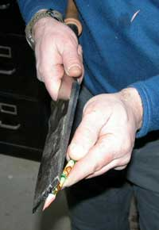
19 March 2008: Matt's shop. Only because a project is required for ProjectNight (or a story of one), did one of the Project Night regulars undertake the project of sharpening a new pencil with a Barr chisel large enough to sharpen a tree. He was just showing off how sharp he sharpens his sharp chisels.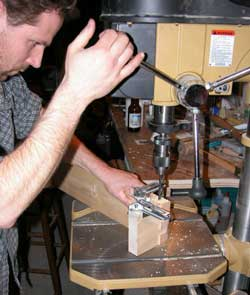
Not to be outdone for projects, an electrician made a heavy wood, dowel-pinned, dove-tail joint bracket to attach an electrical junction inside a house wall, just to have the most solid mid-studs electrical junction mount a wall has seen. If the house is ever torn down, they will save that junction bracket to use on something else, perhaps a ship keel.
Over in the corner a laptop computer, just out of the computer repair shop, was given some therapy to ease it back into cyberspace.
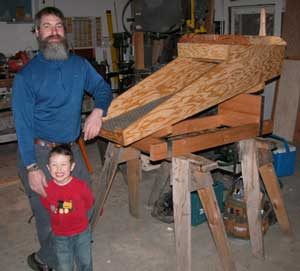
The recently finished really skookum rocker gold sluice was inspected. Every Alaska placer gold miner in the early days would have wanted a sluice of such nature. Cost of production would have been met with only a couple ounces of gold, today and back then, except today the number of nearly worthless paper US dollars associated with gold or anything of real value is amusingly large.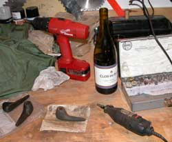
And of course the perpetual 5.4 million year old wood pipe project facilitated busy work for hands while great and weighty matters of serious consequence, upon which the world teeters at the very brink of chaos, were pontificated upon, much to the rapt attention of two dogs who perceived that their attention may earn them an occasional corn chip. It did.
Fine wine. Good ale.
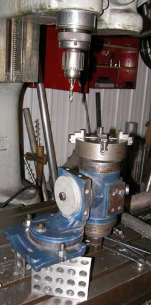
12 March: Jon's shop. The ice tower nozzle head project advanced, with the completion of the first row of 34 degree angle holes. The milling machine was set up for the next row of 52 degree angle holes which required so much time arranging the 2-4-6 blocks (the shiny things with a lot of holes) that there was barely enough time for the ale and evaluation of other projects.
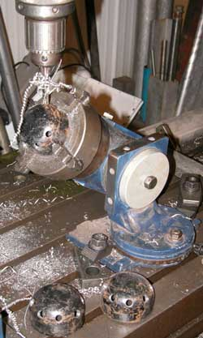
Alcohol abuse was photographed. And it was a fine bottle of select ale before it hit the concrete floor. Tears were shed.
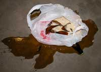
A genuine spotted whirligig rotator handle was started and finished.
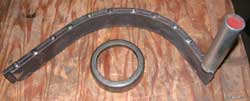
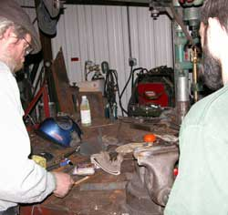
Large public sculptures at Boston and Yokohama were described by a visiting lecturer, who came to Fairbanks to evaluate the massive freeform ice sculpture made by John Reeves. Large artworks are of interest to the ProjectNight.com project journeymen on account as such art often constitutes interesting shop projects. The Yokohama sculpture with the steel ball bearings constantly cycling down through a complex maze of route options dictated by armature balance reactions, with no repeated pattern, was considered for a ProjectNight.com award, but the award had already broken when it was dropped on the floor. Or maybe that was the Boston sculpture.
Overpaid international NGO (non-governmental organization) administrators were evaluated in relation to magnificent shop projects that could greatly benefit people around the world if the administrators did not pay themselves so lavishly to leave only pennies for the people who actually do the work and needed money for the ale to facilitate the work.
The US DemocanRepublicrat devaluation of the US dollar, by the usual process of printing excessive paper money for the insatiable and unproductive government sorts, leaving too little money for the common people to effect the work that gives paper money any value, is in the process of making good ale not affordable by means other than black market processes. A runner was sent to the black market for more ale.
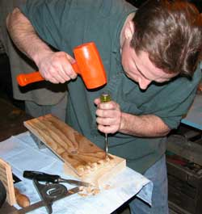
We do not know what the dovetail drawer project was for, but when the chisel was dropped on the floor, it was sent back to the belt sander.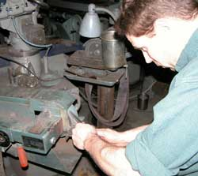
Another visiting ProjectNight scholar asked if one would be angry or thankful if somebody said something that completely ruined what one was successfully doing, because it caused one's knowledge to advance to something prior unknown.
Obviously thankful because one's knowledge was advanced.
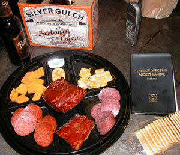
We enjoyed the usual modest array of caribou, moose, salmon and conversation material.
And there we jolly well have it for that ProjectNight.
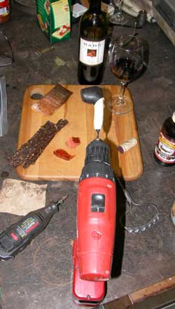
5 March: Tim's shop. The dovetail jig board offered all manner of amusement. That is the extent of what was done with it.
The smoking pipe may be completed this year, maybe.
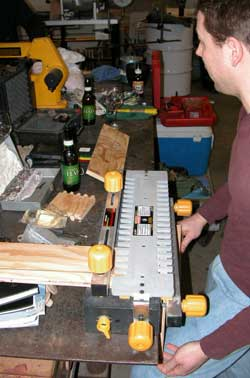
The current affairs director noted the recent pontifications from our benevolent and wise leaders in Washington DC, who again emphasized the new government imperative to spy on us and not tell us what knowledge they were learning or what they were doing with the knowledge, for our security of course. Robust laughter was effected.The Bush-Cheney-Clinton-Obama-McCain-and lot chaps, along with the silly sops who vote for their Regime, actually believe themselves, and remain clueless of their origin and destination. They genuinely perceive that they receive a progressively superior brain design upon each promotion in government, relegating their previous brain inferior to what must be kept secret from it.
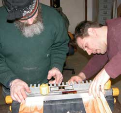
Best comedy on the rock.
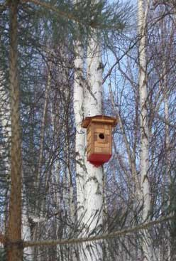
During the week Tim's owl nest project finally got out of the shop and into the tree where the owl had been hooting for the last couple weeks, just in time for the start of the owl nesting season in March. That is the local owl near the same tree last summer.
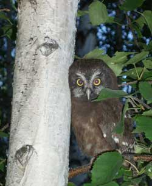
As recognized by the observer, any statement or action of a government chap obviously does not represent the people if the statement or action was not prior known, discussed and approved by the people. Cheney and George's government of secrecy and secret reasons for wars and imprisonments obviously does not represent the people, but being perpetuated on the illusion of representing you, will inherently fail when the illusion is belatedly recognized as only such by those who foolishly sustained it by voting for such a ludicrous Regime.
The Kremlin chaps claimed to represent the people and their need to control Afghanistan and several other regions of what they called the Soviet Union. Whoo?
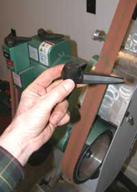
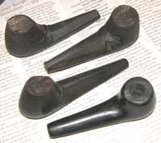
27 February 2008: Tim's Shop
If you think these Project Night people are slow finishing projects, they are also slow to get their projects into use. The boreal owl was outside hooting, and the finished boreal owl nest was still sitting on the work bench inside the shop.
The always-a-handy-project-for-project-night lignitized wood pipes advanced a bit with a little belt sanding action, on a real bench belt sander. Not much, just a little. There was conversation to attend to.
The black handled kitchen knife was advanced to a near-finished condition on the same belt sander. Nearing its finished stage, it required slow and meticulous analysis between each pass on the sander. Of course that would not be understood by a certain female relative who simply did not appreciate fine blade steel, and was going to discard the knife a decade or more ago. While some mere city-raised commoner might have seen only a person carefully sanding a knife, the knife sander's mind was recognizing the illusions of blade makers through centuries of fine blade making, on a blustery day in a low stone hut on the Scottish moorlands above the crags of the coast threatened by Romans, Norwegian Vikings, fire breathing dragons and the English dog king's revenuers. Maybe the aroma of the peaty Scotch was getting a bit heavy in the shop air.
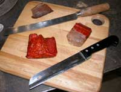
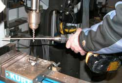
The cork screw production advanced with a round file spinning in a cordless drill smoothing the cork screw turning in the drill press. So who invented the wine cork screw? If it was the French, we will deny it.
More was done and discussed, with more discussed than done, but the web slave must upload the BBQnight.com report, and grab some sleep before off to the IceTower/WebCam.html project in the morning.
Get back to your shop and get production back up to speed.
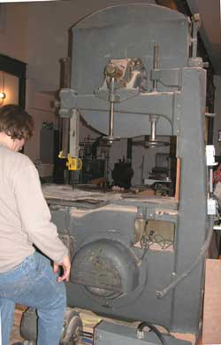
20 February: Matt's ShopPrecisely why the band saw was not sustaining full power under heavy loads was not known, before, during or after the applied expertise of the Project Night experts. There was much homdihooming, pontificating with 3 phase electricity terminology and little else.
The only one who really knew anything tried to explain that the problem resulted from the lunar eclipse that was in full view at the time, right outside the door, with the full moon an interesting reddish brown color. The dog was either interested or wanting another cracker.
The 5.4 million year old lignitized wood from the Hoodoos project advanced on the belt sander clamped in the vice. Yes, this project is nearly as old as the wood. If the world's pipe tobacco smokers were waiting for this guy to finish another pipe, throat cancer rates would plummet. Yes, that is a Band Aid wrapper in the photo. Well, the edge of the sanding belt apparently moves as fast as the middle part. What a surprise. A bottle of first aid was handy.
From there it all became idle chit chat and plans to get something done next Project Night.
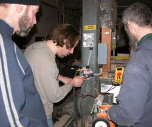
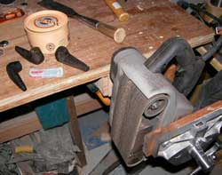
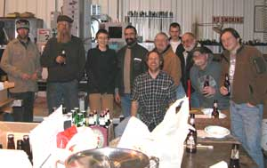
13 February: Jon's ShopThe Project Night accountant from New York showed up. We are not certain of why he did not sell his return flight ticket and stay, but, well, there is just no accounting for accountants. The books would have been found in good order if they had been found.
We would have preferred to perceive that the pot of gourmet soup with magnificent ingredients and flavors was made for the prestigious fellows of Project Night. However, it had been made for a more discerning selection of the Fairbanks citizenry, but arrived at Project Night by unscheduled circumstances. Good enough.
The guys who brought a fine selection of good ales casually set them on the bench, and as casually opened a bottle from the case of Silver Gulch Old 55. While presidents, emperors, congressmen, lawyers and other such useless fools perceive themselves to be the center of attention, and are that among fellow fools, the village bee keeper, brewmaster, wine maker, distiller, auto mechanic and computer guru are those most sought by productive people as colleagues of the group. Fairbanks Alaska has developed many advantages in the game, including the brewmaster at the Silver Gulch Brewery. That is him in the picture.
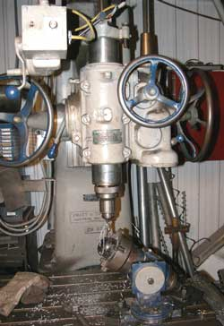
Actual project work effected the use of hand tools, power machinery, electric arcs, open flame and rhetorical leverage.
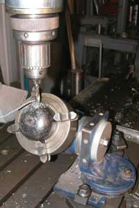
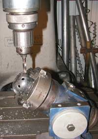
The nozzle heads for next year's world record attempt at the highest free-standing ice tower were started.
The design remains secret, even to the designer. Design alterations are methodically incorporated in regard to advancing knowledge. For example, the 34 degree angle on the lower ring of nozzle holes was found to be ideal for ice wing formation in regard to the knowledge that the multi axis chuck mounting allowed that maximum angle without moving the milling machine bed over a ways to put the chuck on the end. Well, that would have required turning one of those levers. There is only so much a person can do when dealing with such high-tech projects.
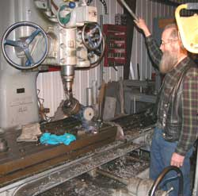
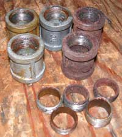
Some 99 cent pipe couplings salvaged from the collapsed rubble of the previous ice tower adventure were refurbished. When hundreds of tons of ice in a tall tower collapse, with a little pipe in the middle, not all the couplings hang on to both ends of the pipe. A couple of the couplings required some of that open flame and rhetorical leverage, but the broken-off pipe threads were successfully extracted. The couplings will be put back into service starting on the weekend. The ice tower artist and crew are an environmentally sensitive, pro-recycling bunch, especially when things start costing a dollar apiece.
There were a few other projects actually undertaken, and more discussed, some creating a few audible guffaws, but the camera guy was busy with that big lever most of the evening.
Page 7 March 08 ------ October
08
Page 8 October 08 ---- January
09
Page 9 February 09 --- November
09
Page 10 November 09 - Present
Page 5 December 07 -- February
08
Page 4 October 07 ---- December
07
Page 3 July 07 --------- October
07
Page 2 April 07 -------- June
07
Page 1 November 06 -- March 07